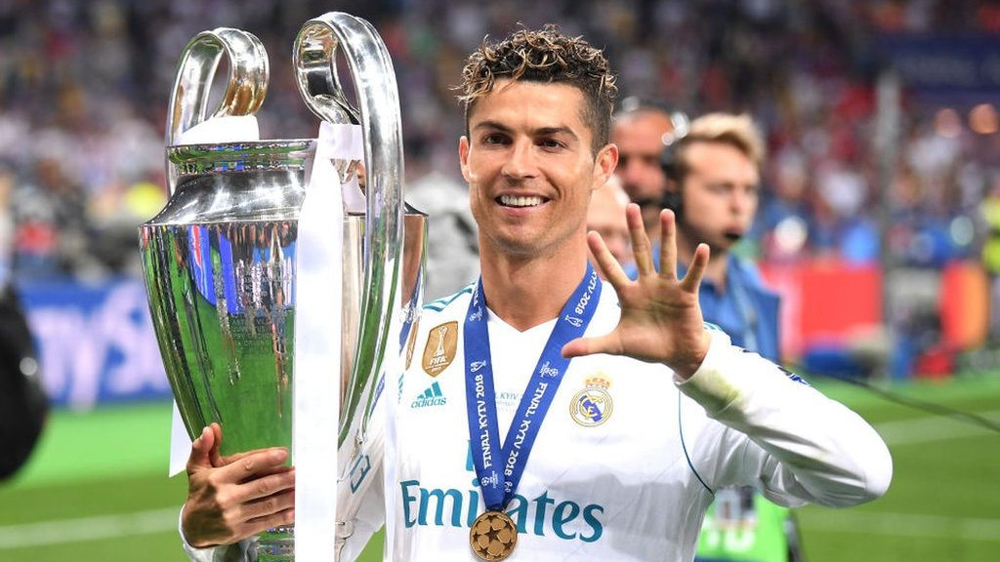

Fórmula 1
Me encanta la velocidad y la emoción de la Fórmula 1. Sigo de cerca el campeonato mundial cada temporada y tengo mis pilotos favoritos, Fernando Alonso, Nyck De Vries y Carlos Sainz. Mis equipos favoritos son Ferrari y Aston Martin.

Fútbol
El fútbol es uno de mis deportes favoritos y disfruto viendo partidos y jugando en mi tiempo libre. Mi equipo favorito es el Real Madrid y también me gusta seguir a la selección española.
Videojuegos
Jugar videojuegos es una de mis aficiones favoritas. Me gusta jugar tanto en consolas como en PC y disfruto de diferentes géneros como los juegos de acción, aventura y estrategia.